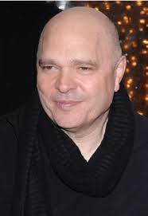
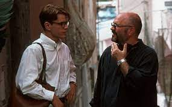

 
British film director, playwright and screenwriter. He was chairman of the board of Governors at the British Film Institute between 2003 and 2007. He directed Truly, Madly, Deeply (1991), The English Patient (1996), The Talented Mr. Ripley (1999), and Cold Mountain (2003), and produced Iris (2001), The Quiet American (2002), Michael Clayton (2007), and The Reader (2008).
He received the Academy Award for Best Director for The English Patient (1996). In addition, he received three more Academy Award nominations; he was nominated for Best Adapted Screenplay for both The English Patient and The Talented Mr. Ripley (1999), and was posthumously nominated for Best Picture for The Reader (2008), as a producer.
back